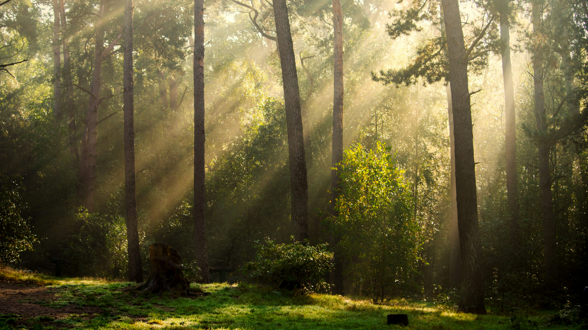
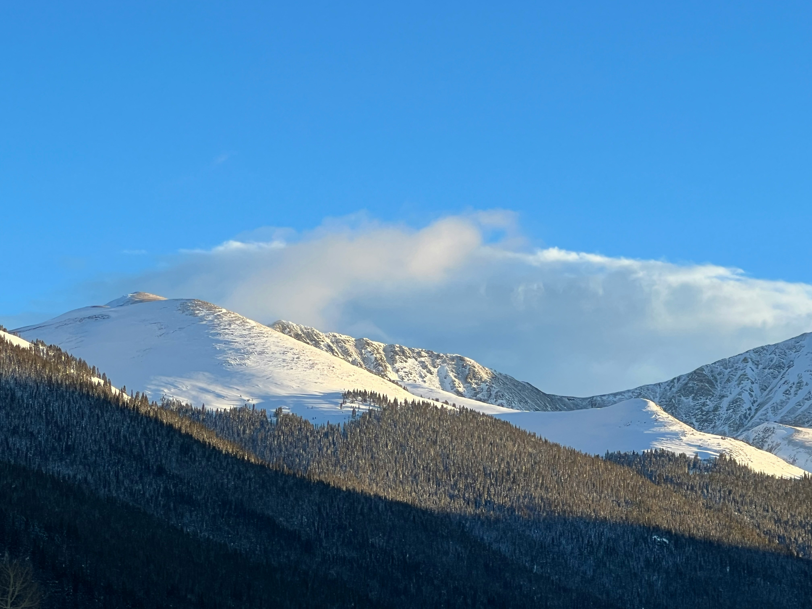

Nature Landscapes

Photo by Dan Otis on Unsplash – Free to use under the Unsplash License.

Photo by Eberhard Grossgasteiger on Unsplash – Free to use under the Unsplash License.
Photo by Patrick Fore on Unsplash – Free to use under the Unsplash License.
Filtered: Grayscale version of Dan Otis's forest photo.
Filtered: Sepia version of Eberhard Grossgasteiger's mountain photo.
Filtered: Enhanced contrast version of Patrick Fore's lake photo.